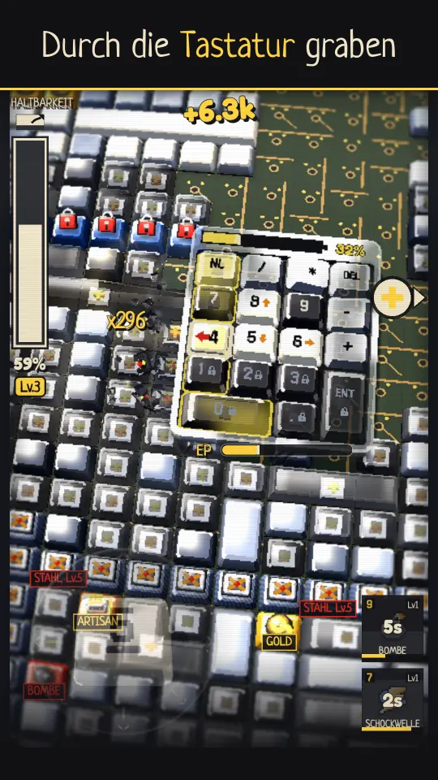
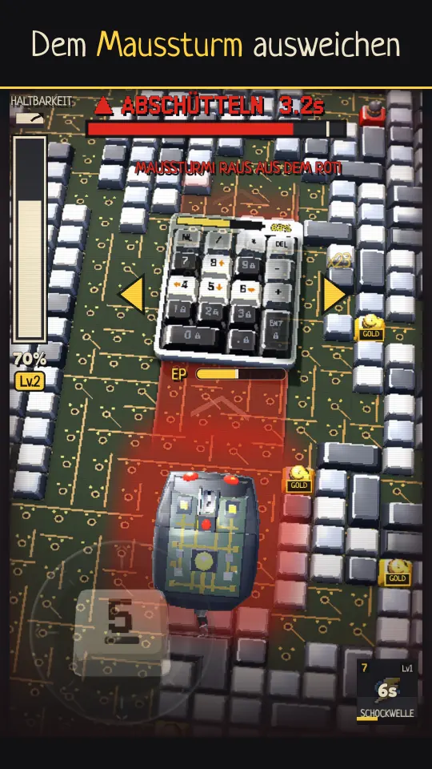
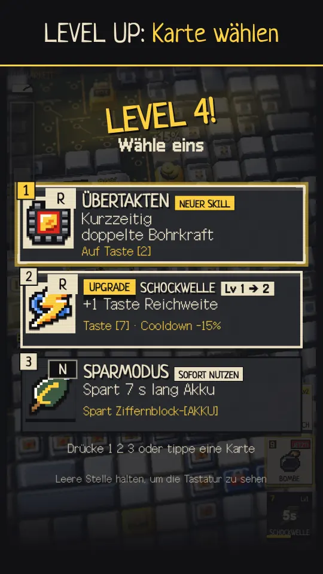
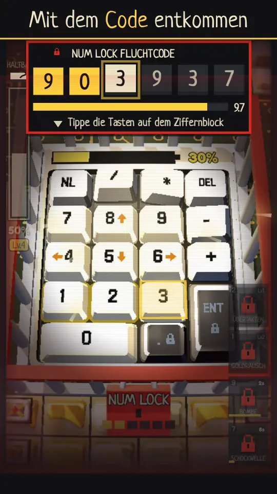
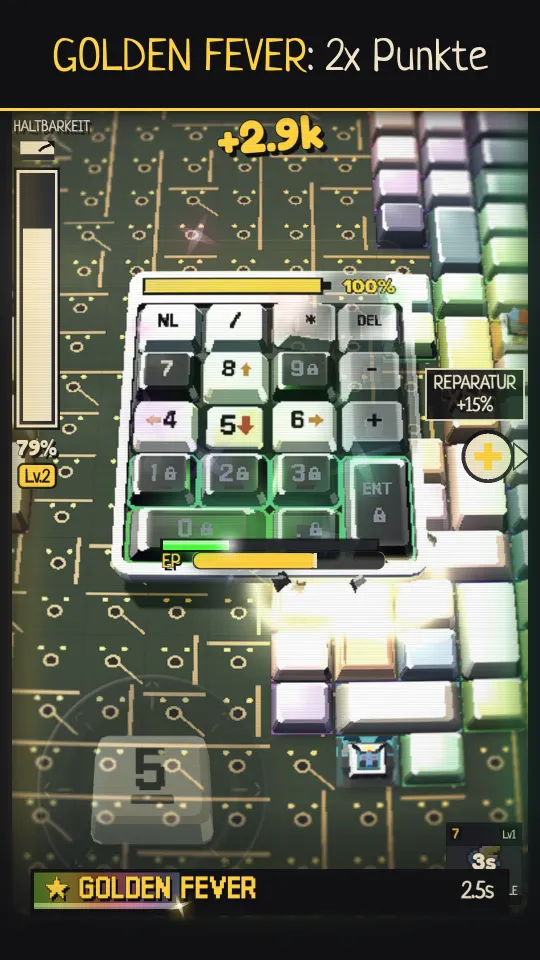

Neues SpielKostenlos im Browser
10key Survival
Ein funkelndes Abenteuer – und ASMR
Jede Taste, die du zerschlägst, klickt, klackert und zerspringt mit echten aufgenommenen Tastaturgeräuschen. Grabe dich als lebendiger Ziffernblock durch eine endlose 3D-Tastatur.
Öffnet sich auf itch.io und startet sofort. Kostenlos, ohne Download, ohne Anmeldung, ohne Werbung.

Graben
Halte eine Richtung gedrückt und brich dich nach unten durch. Bei jedem Levelaufstieg wählst du eine von drei Karten.

Überleben
Ab Level 7 jagt dich die Maus, ab Level 14 auch die Leertaste. Bleib in Bewegung.

Verwandeln
Mit der Karte DRIFT wirst du zur driftenden Tastatur, mit der Karte VERWANDLUNG zum Roboter.





iOS- und Android-Apps bald verfügbar: Bezahl-Apps mit In-App-Käufen. Enthält Zufallsobjekte (Modulziehung): 12 Module, je 8,333 % (1/12). Wahrscheinlichkeiten (auf Englisch)
ErschienenVersion 2.0.0
Quirky Ball
Vom 2D-Merge über den 3D-Becher bis zum Bosskampf. Brich mit Quirky aus dem Labor aus.
Kostenlos, mit Werbung und In-App-Käufen
Gemeinsam von Spielern erforscht—Punkte
—Letzte Runden
Aufzeichnungen werden geladen…
Wie wird die Zahl berechnet?
Punkte aus Classic- und Laborforschung-Runden plus die aktuelle Quirky-Kraft aller Spieler. „Letzte Runden“ zählt Runden mit gespeicherter Punktzahl und Labor-Fluchtrunden. Test-/Betreiberkonten, administrativ ausgeschlossene oder korrigierte Datensätze, Datensätze ohne Kontoverknüpfung und Duplikate sind nicht enthalten. Einige frühe Daten waren bereits über die Speicherfrist hinaus und fehlen.
Genosse und die schöne neue Welt
Wir sehen uns in einem Spiel eines anderen Genres
Lab Notes
Aus dem Entwicklungsraum


Support
Du kommst nicht weiter?
Wir helfen dir.
Ohne Anmeldung. Ohne lange Formulare. Wähle dein Anliegen.
Support öffnen